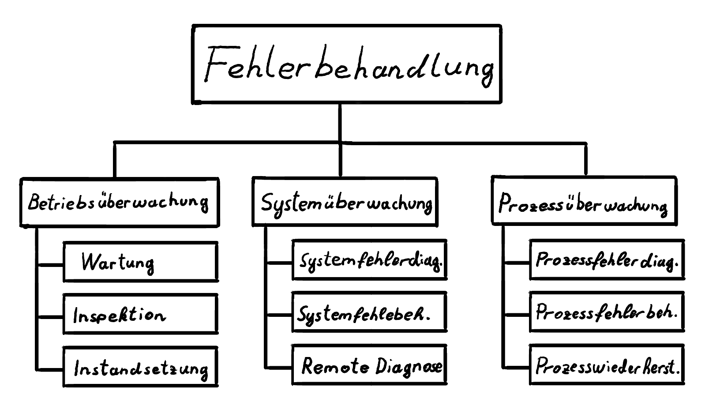
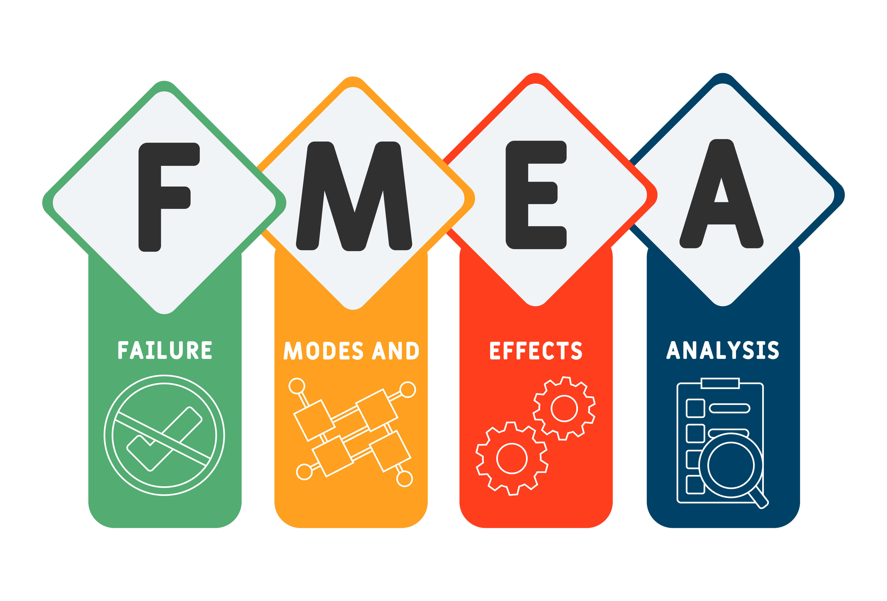
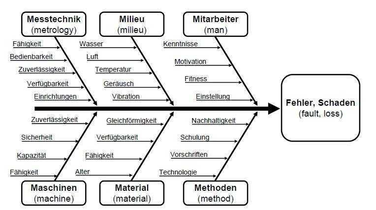
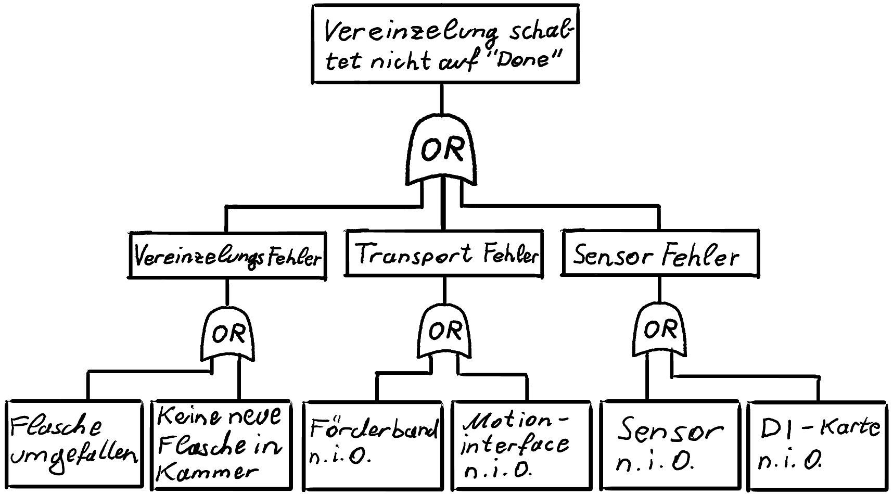
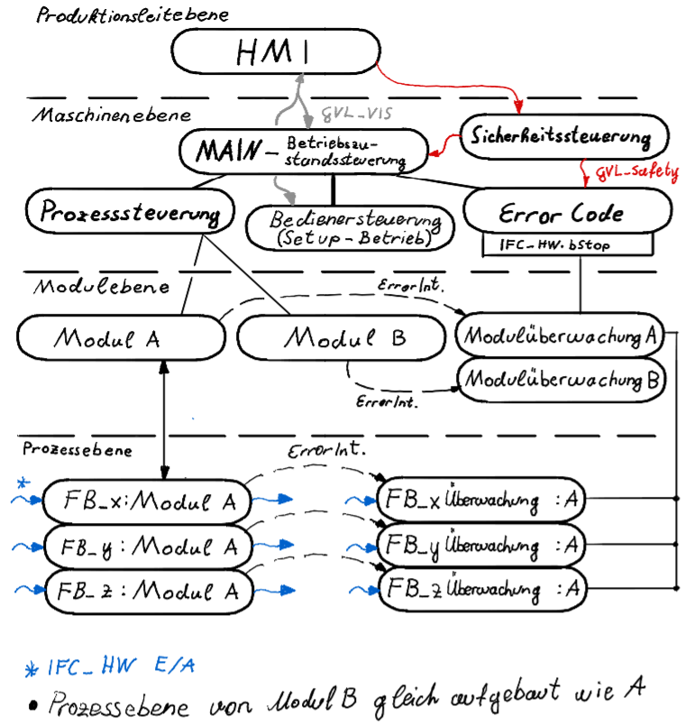
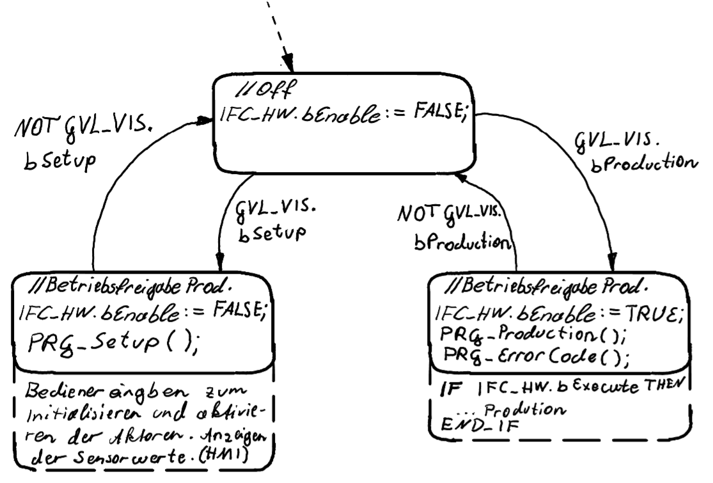
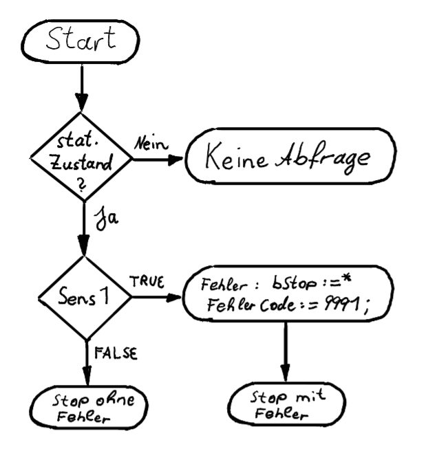
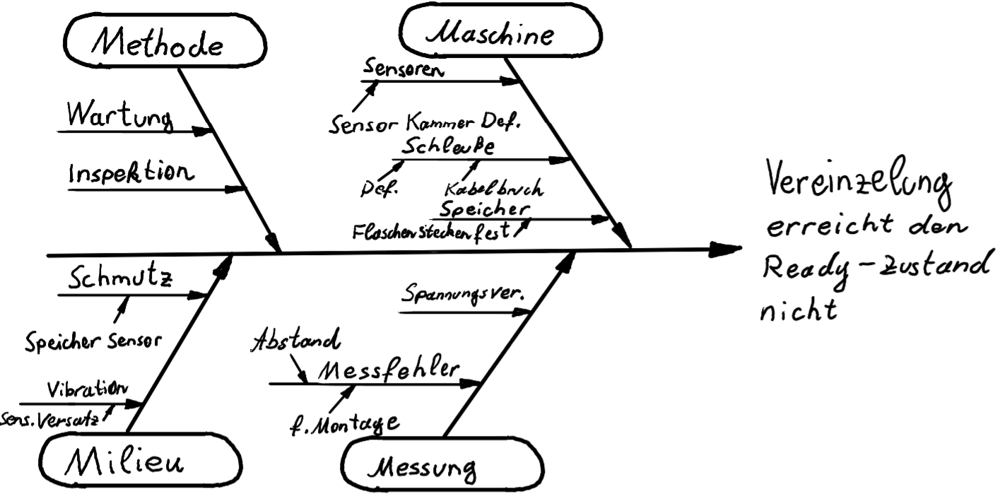
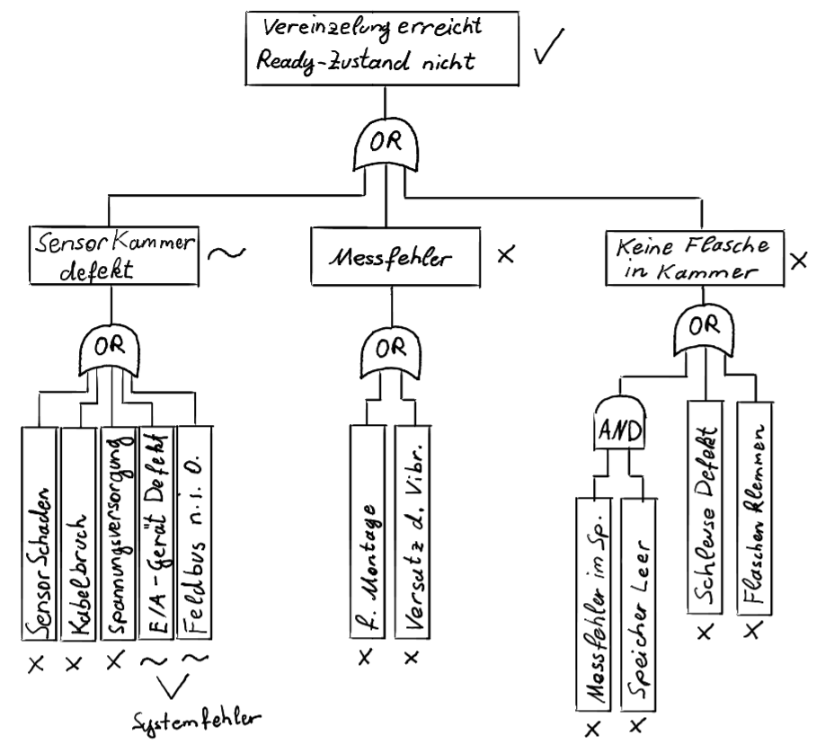

SoSe 2025 Serafin Kollegger & Julian Huber
Automatisierungstechnik
Fehlerbehandlung Allgemein Fehlertypen Fehleranalyse Fehlerdetektionsbausteine
Fehlerbehandlung
Kategorisierung der Fehler

Betriebsüberwachung
- Betriebsdauer
- Wartungsplanung
- Instandsetzung und Komponenten Historie
Systemüberwachung
- Komponentenlaufzeiten
- Fehleranalyse von Sensoren und Aktoren
- Systemfehler der Steuerung
Prozessüberwachung
- Prozessfehler identifikation
- Anlage gezielt in stillstand setzen
- Produktionswiederherstellungsmaßnahmen
Fehleranalyse
FMEA - Failure Mode and Effect Analysis Fehler Ursachen-Wirkungs-Diagramm FTA - Fault Tree Analysis
FMEA
Die Anwendung einer FMEA (Fehlermöglichkeits- und -einflussanalyse) erfolgt in mehreren Schritten und dient dazu, potenzielle Fehler in einem Prozess oder System zu identifizieren, deren Auswirkungen zu bewerten und Maßnahmen zur Fehlervermeidung oder -minimierung zu entwickeln. Hier ist eine Zusammenfassung der wichtigsten Schritte:

- System- oder Prozessanalyse:
- Identifizierung des zu analysierenden Systems oder Prozesses.
-
Aufteilen in kleinere, handhabbare Teile oder Komponenten.
-
Fehleridentifikation:
- Ermitteln potenzieller Fehlerquellen für jede Komponente oder jeden Prozessschritt.
-
Beschreibung der Fehlerarten, z.B. Ausfall, Fehlfunktion, Abweichung von Spezifikationen.
-
Bewertung der Fehlerfolgen:
- Analyse der möglichen Auswirkungen jedes identifizierten Fehlers auf das Gesamtsystem oder den Prozess.
-
Einstufung der Schwere der Auswirkungen (z.B. auf einer Skala von 1 bis 10).
-
Ursachenanalyse:
- Bestimmung der möglichen Ursachen für jeden Fehler.
- Bewertung der Wahrscheinlichkeit des Auftretens der Ursachen (z.B. auf einer Skala von 1 bis 10).
- Entdeckung und Prävention:
- Analyse, wie gut der Fehler durch aktuelle Maßnahmen oder Kontrollen entdeckt werden kann.
-
Bewertung der Wahrscheinlichkeit, dass der Fehler entdeckt wird, bevor er den Endnutzer erreicht (z.B. auf einer Skala von 1 bis 10).
-
Risikobewertung:
- Berechnung des Risikoprioritätszahl (RPZ) durch Multiplikation der Bewertungen für Schwere (S), Auftretenswahrscheinlichkeit (O) und Entdeckungswahrscheinlichkeit (D).
-
RPZ = S × O × D
-
Maßnahmenplanung:
- Identifizierung und Implementierung von Maßnahmen zur Reduktion von Risiken mit hohen RPZ-Werten.
- Maßnahmen können technische Änderungen, Prozessverbesserungen, zusätzliche Tests oder Kontrollen umfassen.
- Überprüfung und Nachverfolgung:
- Überwachung der Wirksamkeit der umgesetzten Maßnahmen.
- Regelmäßige Überprüfung und Aktualisierung der FMEA, um sicherzustellen, dass sie relevant bleibt und neue potenzielle Fehler identifiziert werden.
Durch die Anwendung der FMEA können Unternehmen proaktiv Risiken managen, die Qualität ihrer Produkte oder Prozesse verbessern und letztendlich Ausfälle und Kosten minimieren.
Fehler Ursache-Wirkungs-Diagramm

Fehler Ursachen-Wirkungs-Diagramm
Ermöglicht es die Ursachen zu identifizieren die eine Fehlerauswirkung erzeugen. Hilfreich in der Entwicklung, um gezielt fehlerponteniale einzudämen und während des Betriebs, um schnelle Ursachenerhebungen zu erhalten damit der Fehler ausgebessert werden kann. Speziell wenn menschliches Fehlverhalten die Ursache des Fehlers ist.
FTA

FTA - Failure Tree Analysis
Fehlerzusammenhänge können hier genauer betrachtet werden. Fehlerketten erleichtern die Suche von Fehlerursachen und erhöhen das Verständnis, wie mehrer Fehler in Subsystemen zu einem Fehler im gesamt System führen.
Fehleridentifikation im SPS-Programm
Separation des Steuercodes von Fehlercodes

Maschineneben
- Koordiniert die Betriebszustände durch Bedienereingaben.
- Stellt den Gesamtanlagenzustand dar.
- Fungiert als Zentraler Steuerungsknoten zwischen den unterschiedlichen Steuerungskomponenten.
Zustandsmaschine des MAIN-Programms

Error Code Programm
- Wird parallel zum Steuerungscode ausgeführt.
- Beinhaltet alle Überwachungsbausteine der Module und Funktionseinheiten.
- Löst bei bedarf das Stopsignal IFC_HW.bStop aus.
- Managed Fehlercodes und bildet die Schnittstelle zur Fehlermeldung an HMI ab.
Factory Stop (IFC_HW.bStop)
- Mittels der IFC_HW.bStop Variable, soll es möglich sein die Anlage in einen gezielten Stopzustand zu versetzten.
- Notwendig für Fehler mit gefährdung für Anlagen- oder Menschenschäden.
- Auch bei Sicherheitsstops kann der Steuerungscode in den Stopzustand gesetzt werden, um einen Neuanlauf der Anlage zu ermöglichen.
- Zwei unterschiedliche Konzepte werden für das Anhalten durch bStop benötigt.
Prozessebene, Modulebenen Stopkonzept
- In der Prozess- bzw. Modulebene ist der Stop der Anlage relativ einfach umzusetzen.
-
Ziel ist des den Zustand zu speichern, bei welchem der Stop befehl aufgerufen wurde. Dafür kann die Übergangsbedingung von Zuständen, welche nicht erreicht werden dürfen während eines Aktiven Stopsignals, mit
AND NOT IFC_HW.bStoperweitert werden. -
Somit verhart der Steuerungscode in diesem zustand bis
IFC_HW.bStop = Falseist und startet im richtigen zustand bei Wiederanlauf der Anlage.
Hardware-Ebenen Stopkonzept
- In der Hardwareebene, vorallem bei Motorsteuerungen, kann obiges Konzept nicht eingesetzt werden. Weshalb eine alternative Stragegie notwendig wird.
- Da die Klemmen bei Sicherheitsstops stromfrei geschalten werden ist eine neue Initialisierung notwedig. Zusätzlich müssen die Daten (Position, etc) der Achsen zu Zeitpunkt des Stops gespeichert werden.
- Die Übergangsbedindung wird erweitert durch den Übergang in den Zustand
800: // Stopdurch z.B.
IF mcRelative.done THEN
nState := nState + 1;
ELSIF IFC_HW.bStop then
nState := 800; // Stop
END_IF
Beispiel Neuinitialisierung Manipulator Achse
800 : // Stop
eState := State.Stop;
bAxMovAbs := FALSE;
bAxHalt := FALSE;
bAxReset := FALSE;
bAxPower := FALSE;
IF NOT bStop THEN
nState := nState +1; // ReInit
END_IF
801 : // ReInit
eState := State.Stop;
bAxReset := TRUE;
IF fbReset.Done THEN
nState := nState + 1 ; // RePower
END_IF
802 : // Repower
eState := State.Stop;
bAxReset := FALSE;
bAxPower := TRUE;
IF fbPower.Status THEN
nState := nState + 1; // Direct Homing
END_IF
803 : // Direct Homing
eState := State.Stop;
bAxHome := TRUE;
fbHome.HomingMode := MC_HomingMode.MC_Direct;
fbHome.Position := fStopHome;
IF fbHome.Done THEN
nState := nStateMem; // jump back to last running State
nStateMem := 0;
bAxHome := FALSE;
END_IF
Beispiel Neuinitialisierung Dispenserachsen
800 : // Stop
eState := State.Stop;
bAxReset := FALSE;
bAxMove := FALSE;
bAxPower := FALSE;
IF NOT bStop THEN
nState := nState +1; // ReInit
END_IF
801 : // ReInit
eState := State.Stop;
bAxReset := TRUE;
IF fbReset.Done THEN
nState := nState + 1 ; // RePower
END_IF
802 : // Repower
eState := State.Stop;
bAxReset := FALSE;
bAxPower := TRUE;
IF fbPower.Status THEN
nState := nStateMem; // jump back to last running State
nStateMem := 0;
END_IF
Factory Stop Reset
IF NOT bEnable THEN
nState := 0; // Not bEnable überschreibt den Stop zustand und setzt ihn auf False
END_IF
CASE nState OF
0: // No Stop Signal
bStop := FALSE;
IF bStopsignal THEN // kommt von IFC_HW.bStop
nState := nState + 1;
END_IF
1: // Factory Stop
bStop := TRUE; // IFC_HW.bStop wird am Ausgang überschrieben
IF bReset THEN // Reset Schalter am Bedienpanel
nState := nState + 1;
END_IF
2: // Reset Stop Signal
bStop := TRUE;
IF bRestart THEN // Start Knopf am Bedienpanel
nState := 0;
END_IF
END_CASE
Error Interface
- Das Error Interface dient des Informationsaustausches zwischen den Steuerungsfunktionsblöcken und den Überwachungsfunktionsblöcken. (eState, Zähler, usw.)
- Damit auf den tatsächlichen Speicher der zu übertragenden Variable zugeriffen wird, können Pointer verwedet werden.
- Somit kann das Error Interface als GVL von Pointervariablen ausgeführt werden.
GVL_ErrorInt.eStateVereinzelung := ADR(fbVereinzelung.eState)kann im Modul oder im FB ausgeführt werden, nur so ist die Pointervariable definiert.- Im Überwachungsbaustein kann nun auf die eState Variable der Vereinzelung durch
GVL_Error.eStateVereinzelung^zugegriffen werden. ^ ist dabei der Dereferenzierungsoperator.
Überwachungsbausteine
- Eingabefehler
- Zustandsfehler
- Ausgabefehler
- Zeitabhängigefehler
Zustandsfehler
Flasche am Kopf -> Kann nur in statischen Zuständen überprüft werden
*) bStop wird gesetzt bei schweren Fehlern. Ist dies ein schwerer Fehler mit potentiel katastrophalen Auswirkungen?

Zeitabhängigerfehler

Beispiele Fehleranalyse

